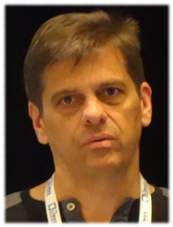

A network filesystem wish list
In the filesystem track and the 2017 Linux Storage, Filesystem, and Memory-Management Summit, Steve French led a discussion on various topics of interest for network filesystems. As with the discussion at LSFMM 2016, there are a number of features that the network filesystem developers would like to see added, though there has been progress on one of primary items from last year: the statx() system call.

French said that the addition of statx() gave Samba and other network filesystems some things that were wanted for a long time. The new system call adds a "birth time" for files, as well as two of the Windows attribute flags. But more is needed. Additional attribute flags, an interface to set attributes, and something like the READDIRPLUS NFS command are all on that list.
Samba leases, which allow the client side to aggressively cache file data, are not fully supported. The API lacks a way to provide a lease key in order to upgrade an existing lease, so upgrading requires dropping the lease, which is inefficient. There is also no way to cache metadata and directory contents, which Microsoft says can result in an enormous reduction in network traffic for typical home-directory-oriented users.
French also noted that version 28 of the rich access-control list (RichACLs) had recently been posted. Some small pieces of the patch set were merged over the last year, but there is a need for full RichACL support. Right now, NFSv4 and Samba ACLs are mapped as best as they can be using extended attributes (xattrs). But not all filesystems store xattrs efficiently and he is also worried that the mapping is imperfect, which could lead to security problems.
There are races when creating files with ACLs and other attributes right now, French said. Jeff Layton thought that using O_TMPFILE, setting the ACLs and attributes on that file, then moving the file to its real name should be sufficient to avoid those races. French said he did not have the details but, from what he understands, the races are unavoidable with the current interfaces. There is a surprising amount of work needed at file creation time, he said.
Network filesystems need broader support for the fast copy options (e.g. server-side copying and copy offload). Almost everyone wants their copies to be done quickly by default, but there is no Linux interface to simply hand a source and target to and have it make the best effort to do that copying quickly. There is a need for a per-file snapshot interface. Right now, there are filesystem-specific ways to request snapshots, but it would be helpful to have a single interface for all filesystems that can support it. Windows has that support, he said.
There is currently no interface to get metadata about the filesystem itself. There are things that XFS and Btrfs know that could help client applications make better decisions. The alignment of the device, whether there is a seek penalty, or if the TRIM command is supported are all things that would be helpful to know. He noted David Howells's proposal for filesystem query system call (possibly statfsx()) that was made in the statx() session; the timestamp granularity example given there was a good one, French said.
Ted Ts'o said that most would probably agree that many of the interfaces French is talking about would be good additions, but they are also easy to bikeshed over so it "takes forever to get them upstream". The filesystem information system call is definitely needed and there is no need to convince the kernel developers of that, but there will be three months to three years of bikeshedding over it. The idea behind statx() was not controversial, Ts'o said, it's just that the details took a long time to be worked out.
But French said that statx() is an example of progress. It was finally pared down to just adding birth time and two attributes, which is great, but it is an extensible interface. The "compressed" and "encrypted" attributes were added with the new call, but more would be helpful and he is optimistic that they will be added.
| Index entries for this article | |
|---|---|
| Kernel | Filesystems/Network |
| Conference | Storage, Filesystem, and Memory-Management Summit/2017 |
Posted Apr 6, 2017 1:49 UTC (Thu)
by dgc (subscriber, #6611)
[Link]
I thought we implemented the copy_file_range() syscall precisely for this. We have support in the NFS and CIFS clients, and support in the NFS server to offload copy operations to the local filesystems. XFS, BTRFS, and OCFS2 provide optimised implementations of this syscall, all other filesystems just do an efficient copy via the splice infrastructure (so is zero-copy?).
I don't know if the CIFS server uses the copy_file_range() syscall to optimise server side copies - that's the only missing piece in this picture, right?
> There is a need for a per-file snapshot interface.
And that's what ioctl(FICLONE) (aka reflink) implements. Supported by all the same filesystems as the copy_file_range() syscall, so we've got full server side support there, too.
> Right now, there are filesystem-specific ways to request snapshots, but it would
All the interfaces I mentioned are VFS level interfaces so are available to be implemented by all filesystems that can...
-Dave.
A network filesystem wish list
> Almost everyone wants their copies to be done quickly by default, but there is no Linux interface to simply
> hand a source and target to and have it make the best effort to do that copying quickly.
> be helpful to have a single interface for all filesystems that can support it.